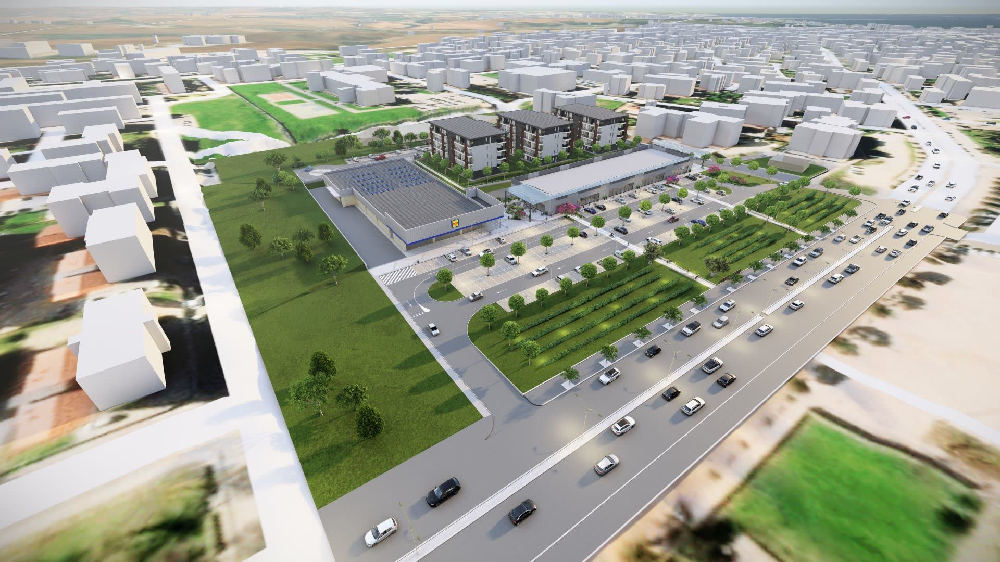

Hotel da 254 camere
Orio al Serio (BG), 3.000 mq
- Anno
- 2025
- Stato
- In corso, in completamento
Orio al Serio (BG). Foto dal drone.
Parchi commerciali, uffici, capannoni e poli logistici, dal 1980 a oggi.
Polo logistico a Calcio (BG). Render.
Leffe Centro ha un sito dedicato.
Orio al Serio (BG), 3.000 mq
Orio al Serio (BG). Foto dal drone.

Porto Torres (SS), area 32.000 mq, slp 4.000 mq
Porto Torres (SS). Render.
Curno (BG), area edificabile 26.000 mq e area agricola 10.000 mq, slp 11.750 mq
Curno (BG). Render.
Rivolta d'Adda (CR), slp 60.000 mq, area 110.000 mq
Rivolta d'Adda (CR). Render.
Leffe (BG), 40 appartamenti, 85 box, 10 negozi
Leffe (BG). Foto.
Commerciale, uffici, industria e logistica, dal 1980 a oggi.
Nessun risultato con questa ricerca. Prova con il nome del comune.
Il modulo per scriverci da questa pagina è in arrivo. Per ora «Scrivici» apre la tua email.
Birolini S.p.A., Via G. Marconi 123/C, 24020 Ranica (BG)